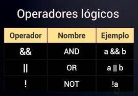

Tipos de operadores
Los tipos de operadores logicos son los siguientes:
Not: Es un operador lógico, el cual se aplica en todo el query y este puede retomar de forma verdadero o falsa, por otro lado, el operador not puede ser usado para negar un query individual y aceptado solo para un query completo.
And:El operador and es asociado para cumplir múltiples funciones en el desarrollo web y en multimedia, un query básico en este caso requiere de un medio específico para cumplir su función.
Only: El operador only previene que navegadores antiguos que no soporten queries con funciones complejas apliquen los estilos asignados, los queries son insensibles a las mayúsculas y minúsculas, por otro lado, la media queries que contenga tipos de medio desconocidos siempre lo tomará falso.
